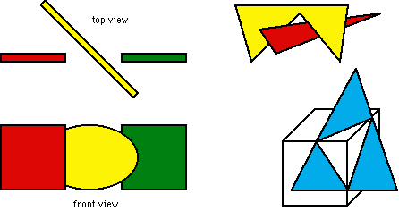

The rendering of the projected image of the 3D environment requires the removal of surfaces and lines that are not visible from a given view point and are hidden by other objects. The removal of hidden lines and surfaces provides a strong depth cue (called interposition) for the viewer and facilitates significantly the perception of a 3D geometry.
Hidden surface removal is a difficult and a compute-intensive process that needs to be repeated with every view point change. Many algorithms have been developed in the past. In the VR viewing loop, the process must be performed in real-time for every frame. Sufficient speed can often only be obtained with special hardware (z-buffer technique).
Painter's Algorithm
(see example on Fill Area page)
- The surfaces (polygons) are sorted within view volume.
- Rendering starts with most distant surface.
- Fill area operation over-paints previously rendered polygons.
Scan-Line Algorithm
- The image is processed one scan-line (horizontal line in bitmap) at a time.
- For each line, all surfaces are intersected and depth information is processed.
Difficult Cases:
Cannot be handled by Painter's Algorithm (and many other algorithms)

Z-Buffer Technique:
Hidden surface removal is performed on pixel level.
Z-depth value (distance in viewing direction) is stored for each pixel in z-buffer, often a hardware addition (organized like additional bitplanes).
While rendering a polygon, the z-value is calculated for each polygon point that corresponds to a pixel in the bitmap. If a pixel has already been rendered with a larger z-value from a point of a previously rendered polygon, the existing pixel color is replaced by the color of the nearer polygon point. Otherwise, the existing pixel color is maintained and the point on the currently rendered polygon is ignored since it is hidden.
In the graph above, the pixel at the center is first filled with red color from the red polygon with the z-value z1. When the yellow polygon is drawn, the smaller z-value z2 for the same pixel causes an over-painting of the pixel with yellow.
Characteristics of z-buffer technique:
Polygons can be rendered in any sequence, all special cases including surface intersections are handled properly. If supported by hardware, the z-buffer technique is extremely fast.
The resolution of the z-buffer (number of bits used for the storage of z-values) determines the accuracy. Typically, 16 or more bits are used to cover the distance between front and back clipping plane.
Problem: So called 'co-planar' polygons have identical z-values. In addition, z-values of nearby polygons may be identical due to low resolution of z-buffer. Both conditions may result in flickering polygons (also known as z-buffer tearing). Advise: Avoid co-planar polygons or separate the polygons by a small distance.
Z-Buffer Technique: Flickering effect caused by co-planar polygons


{kind=link}
{kind=link}